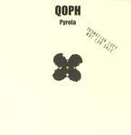

| Artist: | Qoph |
| Title: | Pyrola |
| Label: | Kaleidophone KALCD1 |
| Length(s): | 53 minutes |
| Year(s) of release: | 2004 |
| Month of review: | [08/2004] |
| 1) | Woodrose | 5.19 |
| 2) | Half Of Everything | 6.28 |
| 3) | Korea | 10.01 |
| 4) | Travel Candy | 5.40 |
| 5) | Stand My Ground | 6.26 |
| 6) | Moontripper | 4.39 |
| 7) | Fractions | 14.03 |
As the album progresses the stoner overtones become stronger, and the progressive influences less, especially in Stand My Ground. Moontripper has some very heavy guitars, but the mellotron in the mid section returns the progressive feel.
The long track Korea has a longish mid section that breathes the atmosphere of live rock improvisation, including some odd and off key experimenting.
Travel Candy is an instrumental track with relaxed bass in the back, excited drums, experimenting guitar and Steensland's theramin across. A track with a feel between dreamy, spacy and jammy.
And then the final semblance: closer Fractions has the feel of one of those longer Doors tracks. Not as morbid or as vocally explicit, but the slow build up combined with Kvist's vocal timbre conjures up the image. The longish closing section featuring somewhat eastern percussion further assists in doing so.
Reading through the thank you's I noted a name that came to mind while listening to the disc's first track Woodrose: Anekdoten, if only for brief glimpses of a likeness.